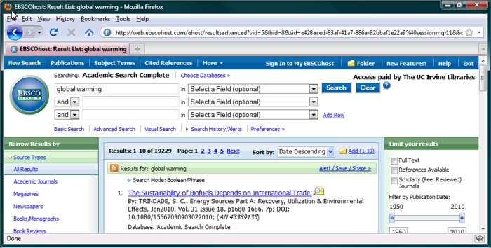
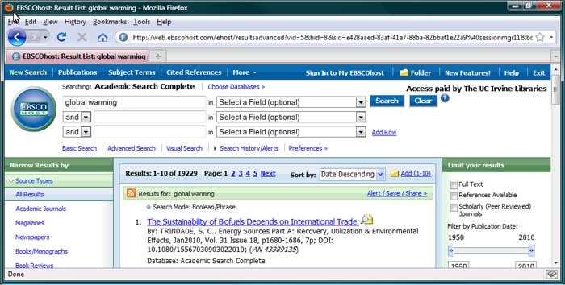

Sorting in Action!
Let’s see how sorting your results can help your research in the Academic Search Complete database available at UCI. To watch the demo in a new browser window, click on the image below. |
|
|  |

Let’s see how sorting your results can help your research in the Academic Search Complete database available at UCI. To watch the demo in a new browser window, click on the image below. |
|
|  |